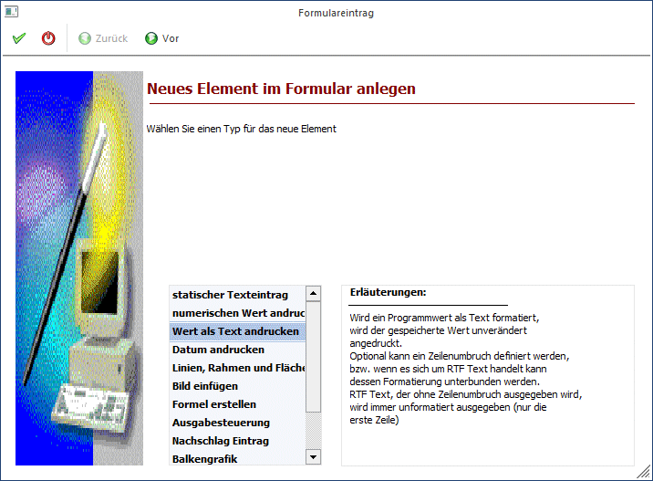
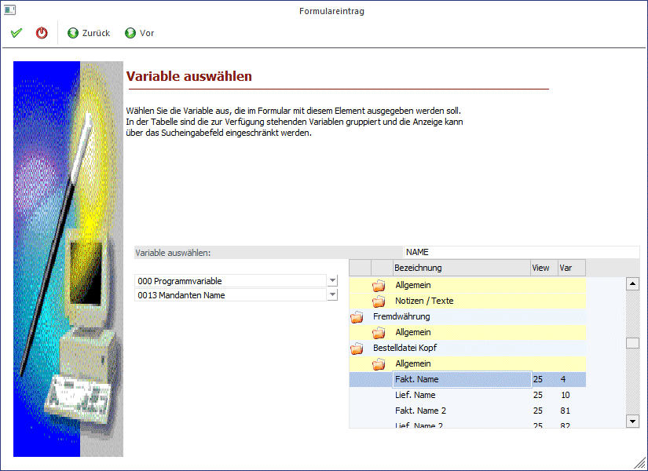
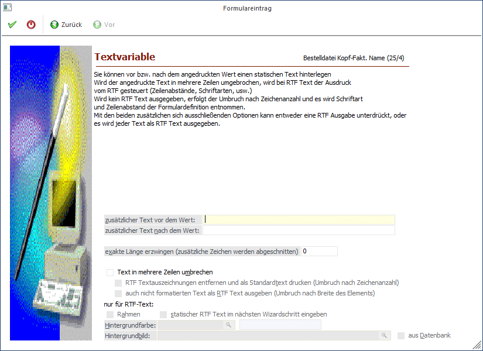

Mit dieser Option können Textvariablen (wie z.B. Namen, Adressen, etc.) angedruckt werden.
Schritt 1
Bei der Auswahl des neuen Elements wird die Option "numerischen Wert andrucken" ausgewählt.

Durch Anklicken des VOR-Buttons gelangt man in das nächste Fenster, wo definiert werden kann, welche Variable angedruckt werden soll:
Schritt 2

Aus der ersten Auswahllistbox kann der Datenbereich ausgewählt werden, wobei für jeden Ausdruck immer nur bestimmte Datenbereiche vorgesehen sind (in einem Kontoblatt kann z.B. nicht auf Artikelstammdaten zugegriffen werden).
Aus der zweiten Listbox muss dann die Variable selbst ausgesucht werden, die angedruckt werden soll. Im rechten Bereich des Fensters kann auch nach bestimmten Variablen gesucht werden. Wenn im Feld Suchbegriff ein Wert eingetragen und durch Drücken der TAB-Taste bestätigt wird, werden alle verfügbaren Variablen angezeigt, die den Suchbegriff irgendwo enthalten. Durch einen Doppelklick aus dem Suchergebnis kann die Variable übernommen werden.
Durch Anklicken des VOR-Buttons können weitere Einstellungen zum Andruck der Variable eingegeben werden. Durch Anklicken des ZURÜCK-Buttons kann nochmals der Typ verändert werden. Durch Drücken der F5-Taste wird der Eintrag in das Formular übernommen. Durch Drücken der ESC-Taste wird das Fenster geschlossen.
Schritt 3

Im 3. Schritt können zusätzliche Einstellungen für den Andruck vorgenommen werden:
Ø zusätzlicher Text vor dem Wert
Wird in diesem Feld etwas eingetragen, dann wird der Variable ein Text vorangestellt, d.h. vor dem Wert wird noch eine dazugehörige Bezeichnung angedruckt (Führungstext).
Ø zusätzlicher Text nach dem Wert
Wird in diesem Feld etwas eingetragen, dann wird nach der Variable ein Text angedruckt.
Ø Exakte Länge erzwingen (zusätzliche Zeichen werden abgeschnitten)
Hier kann (eine Zahl) angegeben werden, wie viele Zeichen tatsächlich ausgedruckt werden sollen. Befinden sich im Datenfeld trotzdem mehr Zeichen werden diese weggelassen. Diese Option wird dann verwendet werden, wenn für den Andruck nur eine bestimmte Anzahl von Stellen vorgesehen ist.
Ø Text in mehrere Zeilen umbrechen
Ermöglicht die Ausgabe über mehrere Zeilen (mit Zeilenumbruch). Wenn RTF-Felder (Ritch-Text-Format-Felder: Notizblöcke im Personenkonten- oder Artikelstamm) verwendet werden, muss diese Option gesetzt werden, damit der Text nicht mit Sonderzeichen ausgegeben wird.
Ist die Option "Text in mehrere Zeilen umbrechen" aktiviert, stehen weitere Optionen zur Verfügung:
Ø RTF Textauszeichnungen entfernen und als Standardtext drucken (Umbruch nach Zeichenanzahl)
Mit dieser Option wird gesteuert, dass RTF-Texte als "normaler" Text ausgedruckt wird - damit gehen allerdings alle Formatierungsinformationen (Schriftarten, und -größen, Hervorhebungen) verloren.
Ø Auch nicht formatierten Text als RTF Text ausgeben (Umbruch nach Breite des Elements)
Ist diese Option aktiviert, dann wird der angedruckte Text immer in einen RTF-Text konvertiert. Diese Funktion kommt dann zum Tragen, wenn nicht alle Notiztexte mit einer aktuellen Version erfasst wurden.
Hintergrund: Die Funktion der RTF-Felder wurde erst mit der Version 7.1 eingeführt. Wurden nun Notizen in einer Version VOR 7.1 erfasst, so sind diese noch als normaler Text gespeichert. Damit nun beide Textarten das gleiche aussehen haben, müssen die "normalen" Texte in RTF konvertiert werden.
Durch Anklicken des ZURÜCK-Buttons kann die verwendete Variable verändert werden. Durch Drücken der F5-Taste wird der Eintrag in das Formular übernommen. Durch Drücken der ESC-Taste wird das Fenster geschlossen.
Ø Rahmen
Durch Aktivieren dieser Checkbox, wird der Multilinetext mit einem Rahmen eingefasst.
Ø Statischer RTF Text im nächsten Wizardschritt eingeben
Wird diese Checkbox aktiviert, dann kann im nächsten Schritt des Wizard ein freier Text eingegeben werden, der nicht unbedingt in einer Variable enthalten sein muss.
Ø Hintergrundfarbe
Hinterlegung einer Hintergrundfarbe für Multilinefelder. Über den Matchcode können die Farben ausgewählt werden.
Ø Hintergrundbild
Für Multilinefelder kann hier ein Hintergrundbild festgelegt werden. Über den Matchcode kann nach Bildern gesucht werden.
Ist die Checkbox
Ø aus Datenbank
aktiviert, werden im Matchcode nur mehr Grafiken vorgeschlagen, die sich in der Datenbank befinden.